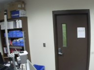

Wireless Video Surveillance
Home
Image Gallery
Video/Camera Controls
Admin Login
About NDmesh
Snapshots

Router Map
Copyright © 2010
CSE
,
University of Notre Dame
Credit for this site's design and functionality:
Chris Holguin
Greg Angle